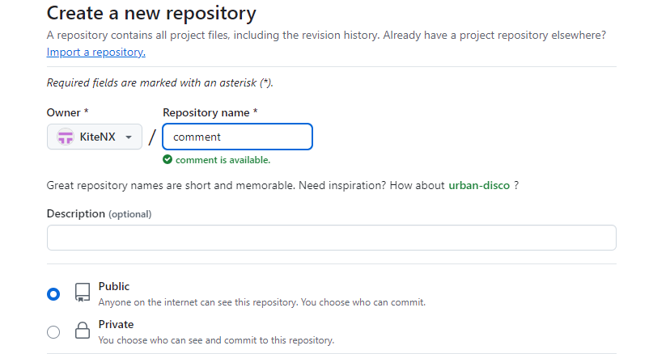
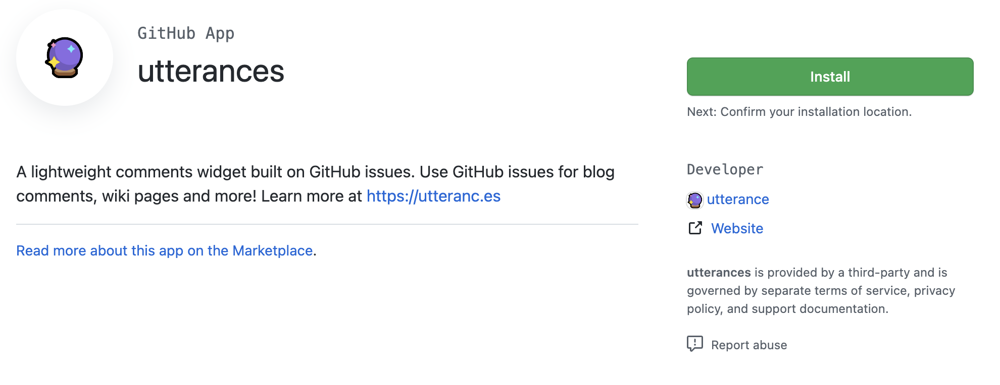

hexo 配置评论功能（utterances）
本文最后更新于 2024年10月12日 下午
在 Fluid 主题（通常用于 Hexo 博客）中安装 utterances（一个基于 GitHub Issues 的评论系统）
1.安装 Fluid 主题
确保你已经正确安装并配置了 Fluid 主题。如果还没有安装，你可以按照 Fluid 官方文档 完成主题安装。
2.注册 GitHub 账号
Utterances 依赖于 GitHub Issues 作为评论数据源，所以你需要有一个 GitHub 仓库作为评论存储地。如果还没有，你需要创建一个新的 GitHub 仓库：
创建一个新的公开或私有仓库，用于存储评论
github安装utterances
3.启用 Utterances
Utterances 是通过 HTML 脚本嵌入到页面中的，Fluid 主题通常提供了一个集成评论系统的配置方式。你只需要在主题的 _config.yml 中添加 Utterances 的相关配置。
编辑你的主题配置文件 _config.fluid.yml 或者 themes/fluid/_config.yml：
1 | |
配置utterances插件 在_config.fluid.yml文件找到utterances进行修改
1 | |
配置说明：
repo：填写你的 GitHub 用户名和评论用的仓库名，格式为username/repository。issue_term：定义评论关联方式，通常使用pathname或url。theme：Utterances 支持不同的主题风格，你可以选择github-light、github-dark等。label：设置在 GitHub Issue 中显示的标签。
utterances 需要的是 HTTPS 格式的仓库地址，你只需提供 GitHub 用户名和仓库名的组合，形如 username/repo
4.部署测试
1 | |
看到以下内容 即为配置成功
如果有些页面没有出现此评论插件可以在文章开头手动打开也可以多刷新刷新
hexo 配置评论功能（utterances）
https://kitenx.github.io/huyanqun.github.io/2024/10/11/hexo-配置评论功能（utterances）/